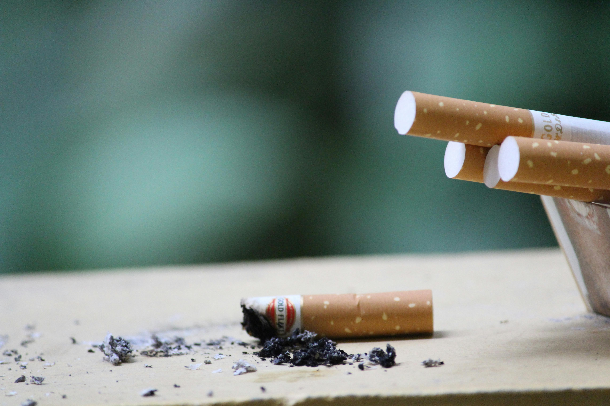

Diseñando el Mensaje: Vuestra Campaña Final
Habéis recorrido un camino intenso de descubrimiento científico: desde desentrañar la química oculta tras las etiquetas, hasta ser testigos en el laboratorio del rastro físico que la inhalación deja en nuestras células. Pero el conocimiento científico solo alcanza su verdadero potencial cuando se comparte para proteger a la comunidad. En esta Misión Final, dejáis de ser investigadores para convertiros en comunicadores y agentes de salud. Vuestro reto es diseñar una Campaña de Sensibilización que hable el lenguaje de vuestros compañeros, que rompa mitos y que traduzca la complejidad del daño en el sistema respiratorio y digestivo en un mensaje que salve vidas. Tenéis la ciencia de vuestro lado y la tecnología en vuestras manos; ahora, elegid vuestra voz y decidid cómo queréis transformar la realidad de vuestro centro.
¡Es el momento de que vuestro mensaje deje huella!"

Elegid UNO de los siguientes formatos para vuestro producto final. Recordad que el objetivo es impactar y concienciar basándoos en evidencias científicas:
- Opción A: El Podcast Informativo (Herramienta: Spreaker).
- Opción B: Vídeo Estilo "TikTok" (Herramienta: Clipchamp).
- Opción C: Vídeo Animado (Herramienta: Powtoon).
Vuestras campañas se presentarán en la Sesión 9 ante el resto de la clase.
¡Sorprendednos con vuestra creatividad!